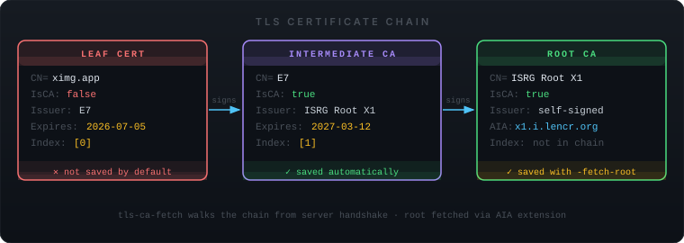

Extract CA certificates from any TLS server — one command, no OpenSSL gymnastics. Connects, walks the cert chain, and writes PEM to disk.
$ tls-ca-fetch github.com → Connecting to github.com:443 … Chain received: 2 certificate(s) ────────────────────────────────────────────────────────────── [0] leaf CN=github.com IsCA=false Issuer : DigiCert TLS Hybrid ECC SHA384 2020 CA1 Expires: 2026-03-26 [1] intermediate CA CN=DigiCert TLS Hybrid ECC SHA384 2020 IsCA=true Issuer : DigiCert Global Root CA Expires: 2031-04-13 AIA : http://cacerts.digicert.com/DigiCertGlobalRootCA.crt ────────────────────────────────────────────────────────────── ✓ Saved 1 CA certificate(s) → github.com-ca.pem Verified: 1 PEM block(s) readable in output file
Reads PeerCertificates from the TLS handshake state — no HTTP, no SNI tricks. Gets every cert the server presents.
With -fetch-root, chases the Authority Information Access extension to download the root CA directly from the issuer's URL.
Single static binary. No OpenSSL CLI, no curl, no certutil. Copy it anywhere and it runs — Alpine, RHEL, Debian, distroless containers.
Works on port 443, 8443, 587 (SMTPS), 636 (LDAPS), or any custom port. Pass a flag or a positional argument.
Use -insecure to extract certs from self-signed or private-CA servers without failing on verification.
Pass -o - to write PEM to stdout and pipe straight into OpenSSL, update-ca-certificates, or your config pipeline.

$ tls-ca-fetch github.com ✓ github.com-ca.pem $ tls-ca-fetch internal.corp.example 8443
$ tls-ca-fetch -o - vault.internal \ | openssl x509 -noout -text
$ tls-ca-fetch -fetch-root corp-proxy.internal $ sudo cp corp-proxy.internal-ca.pem \ /usr/local/share/ca-certificates/corp-proxy.crt $ sudo update-ca-certificates
$ tls-ca-fetch -insecure \ -o my-internal-ca.pem vault.internal